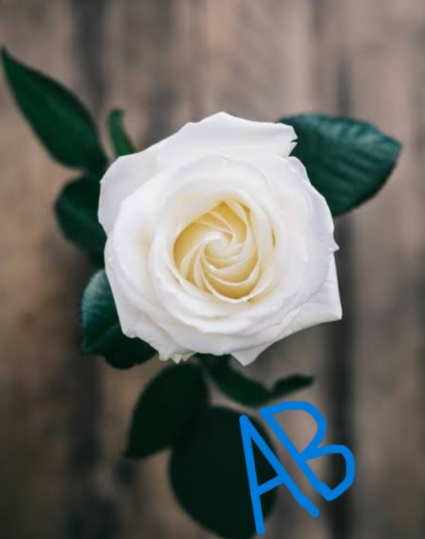
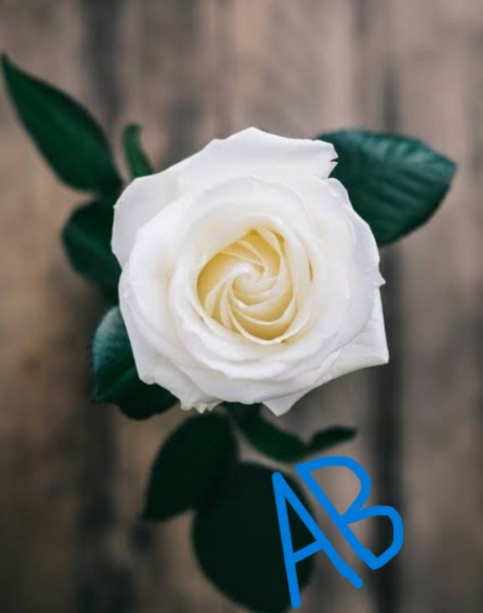
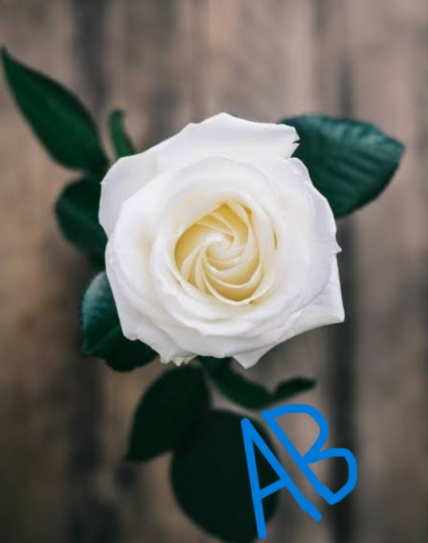

ABOUT ROSE |
The rose is one of the beautiful flowers in the world.The rose plant is an ornamental plant.
The stems are usually prickly and their glossy,green leaves have toothed edges.People often plant it in their house pots.
Due to its beauty and aroma, it is planted in homes.The difference colours of roses are red,pink and white.

BACK |